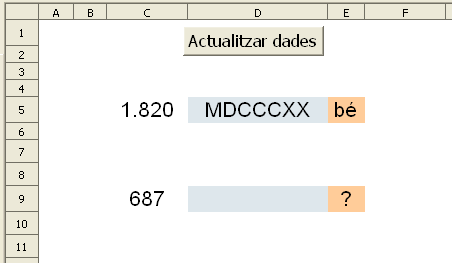

Presentació gràfica de l'activitat

Funcions que es fan servir en aquesta activitat:
Objectiu de l'activitat
Escriure números romans de l'1 fins al 3.999 amb l'opció més simplificada.
Desenvolupament de l'activitat
1. Obrir el el fitxer M6 i afegir un nou full anomenat M6P5 números romans
2. Fer que les cel·les dels rangs C5:E5 i D9:E9 tinguiN un format (atributs de la cel·la) semblant al gràfic de la presentació de l'activitat.
3. Escriure a la cel·la C5: =SI($A$1=0;ALEATENTRE(1;3999))
4. Escriure a la cel·la G5: =ROMA(C5)
Amb aquesta fórmula es converteix el número que hi ha a la cel·la C5 en un número romà.
5. Escriure a la cel·la
E5:
=SI(D5="";"";SI(G5=D5;"bé";"?"))
Si la cel·la D5 no mostra cap valor, llavors la cel·la E5 no mostra cap valor; en cas contrari, la cel·la E5 mostrarà el "bé" o el "?" en funció si el contingut de la cel·la G5 és igual o no al contingut de la cel·la D5.
6. Seleccionar les cel·les del rang
C5:G5, copiar-les i enganxar-les a la cel·la
C9.
7. Fer una macro amb les següents funcions:
8. Protegir les cel·les que convingui.
9. Ocultar o fer no visible les cel·les que convingui.
10. Comprovar que funcioni correctament l'activitat.
Per escriure números romans, cal escriure'ls en lletra majúscula. No és el cas, però si convingués també es podria fer que l'activitat funcionés amb lletres minúscules.
11. Comprovar que l'activitat funcioni correctament.
12. Desar el fitxer
M6.
Presentació gràfica de l'activitat
Funcions que es fan servir en aquesta activitat
Objectiu de l'activitat
Escriure el graus aproximats d'un angle.
Desenvolupament de l'activitat
1. Obrir el fitxer M6 i afegir un nou full anomenat M6P5 graus aproximats
2. Escriure a la cel·la G7: =SI(A1=0;ALEATENTRE(1;9))
3. Escriure a la cel·la H7: =SI(A1=0;ALEATENTRE(1;9))
4. Fer un digrama de sectors amb les dades de les cel·les G7 i H7 i fer que tingui els següents atributs:
Posició X: 2cm
Posició Y: 3,20cm
Alçada: 3,50cm
Amplada: 3,50cm
5. Escriure a la cel·la H8: =(H7*360)/SUMA(G7:H7)
Aquesta fórmula es basa amb una senzilla regla de tres. Si la suma de les cel·les G7 i H7 representen el 360º, el valor de la cel·la H8 representarà la part proporcional dels 360º (zona vermella).
6. Escriure a la cel·la
H10:
=(G7*360)/SUMA(G7:H7).
Aquesta fórmula es basa amb una senzilla regla de tres. Si la suma de les cel·les G7 i H7 representen els 360º, el valor de la cel·la H10 representarà la part proporcional dels 360º graus (zona blava).
7. Crear una barra de desplaçament (de Controls del formulari) i situar-la prop de la cel·la
E5.
8. Enllaçar aquesta barra a la cel·la
E5 amb un valor mínim de
0 i un valor màxim de
20.
9. Esciure a la cel·la
G8:
=H8-E5
El valor de la cel·la G8 és el resultat de restar el valor del cel·la H8 menys el marge d'error que apareixen la cel·la E5 (variable independent). Axí s'aconsegueix el mínim valor que es pot proposar perquè es consideri l'activitat ben resolta tenint ent compte el marge d'error que es permet.
10. Escriure a la cel·la
I8:
=H8+E5
El valor de la cel·la I8 és el resultat de sumar el valor de la cel·la H8 més el marge d'error que apareixen la cel·la E5 (variable independent). Així s'aconsegueix el màxim valor que es pot proposar perquè es consideri l'activitat ben resolta tenint en compte el marge d'error que es permet.
11. Escriure a la cel·la
F8:
=SI(E8="";"";SI(I(E8>=G8;E8
<=I8);"bé";"no"))
Amb aquesta fórmula apareix el "bé" si el que s'ha escrit a la cel·la E8 està dintre del marge d'error.
12.Escriure a la cel·la
G10:
=H10-E5
13.Escriure a la cel·la
I10:
=H10+E5
D'aquesta manera els valor de les cel·les G10 i I10 aniran canviant en funció del marge d'error que es fa amb la barra de desplaçament.
14. Escriure a la cel·la
F10:
=SI(E10="";"";SI(I(E10>=G10;E10
<=I10);"bé";"no"))
15. A la cel·la
D8 es pot escriure un text semblant al següent: "graus aproximats de la zona vermella tenint en compte el marge d'error:"
16. A la cel·la
D10 es pot escriure un text semblant al següent: graus aproximats de la zona blava tenint en compte el marge d'error:
17. Fer que les cel·les
D8 i
D10 tinguin els següents atributs:
Alçada: 1,00cm
Amplada: 8,00cm
18. A les cel·les E8 i E10 l'alumne escriu les possibles solucions de l'activitat. Aquestes cel·les poden tenir els següent atributs:
19. Fer visible les línies de contorn de les cel·les dels rangs D8:E8 i D10:E10
20. Fer una macro amb les següent funcions:
Esborrar el contingut de la cel·les E8 i E10.
Assignar a la cel·la A1 el valor de 0
Que la cel·la E8 rebi el focus.
21. Validar la cel·la A1 per al valor 0.
22. Protegir les cel·les que convingui.
23. Protegir posició i mida del gràfic i de la barra de desplaçament.
24. Ocultar les cel·les que convingui.
25. Comprovar que l'activitat funcioni correctament.
26. Desar el fitxer M6.